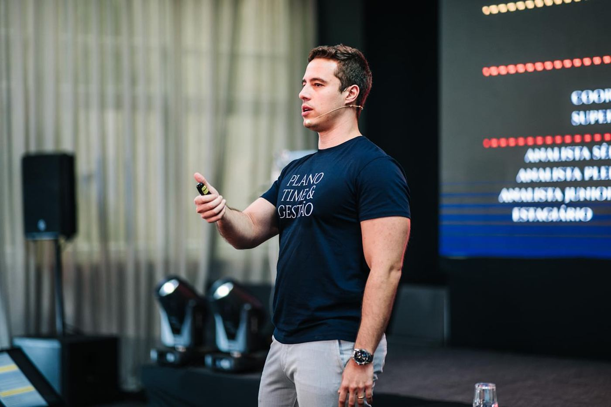
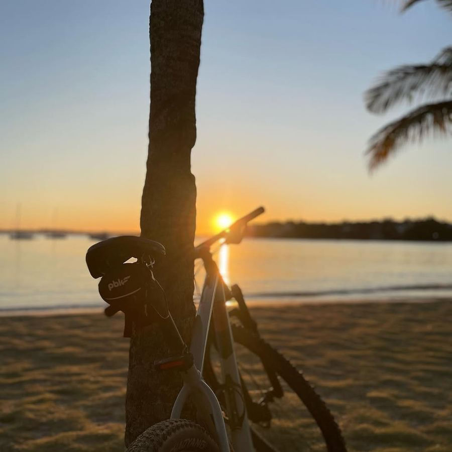

Checkpoint 01
Diagnóstico
Entenda quem já entrou
Compradores, leads, canais, histórico, margem, capacidade de entrega e limite de risco.
Saída: avançar, corrigir ou parar
A Ação Interna encontra uma nova venda entre os compradores e leads que já entraram no funil da sua operação de Direct Response. Em cerca de 45 dias, com o método Base Money.
Triagem antes de qualquer conversa · até duas operações-piloto
de reais vendidos pela internet nas operações que conduzi
de digital, desde 2016
de condução, do diagnóstico à leitura final
O problema
Depois da primeira compra, compradores e leads saem do calendário. Quando a empresa precisa vender mais, compra atenção nova outra vez.
A operação que recomeça
O próximo resultado depende de mais gente entrando pela porta da frente.
A operação que volta à própria base
Compradores e leads já adquiridos recebem uma oferta pensada para o momento em que estão.
O método Base Money
Eu conduzo as decisões e reviso os pontos críticos. O seu time coloca de pé.
Checkpoint 01
Compradores, leads, canais, histórico, margem, capacidade de entrega e limite de risco.
Saída: avançar, corrigir ou parar
Checkpoint 02
Quem pode receber uma nova oferta, quanto precisa sobrar e o que a operação aguenta entregar.
Saída: a conta feita, com os seus números
Checkpoint 03
Grupo prioritário, oferta, condição, mensagem, sequência, responsáveis e calendário. Eu reviso antes de ir ao ar.
Saída: direção pronta e prontidão revisada
Checkpoint 04
Vendas, custos, margem e resposta por grupo. A partir daí, repetir, corrigir, ampliar ou encerrar.
Saída: aprendizado registrado e o próximo movimento
Cerca de 45 dias, do começo ao fim

Quem conduz
Engenheiro, ex-Marinha Mercante, no digital desde 2016. Desde 2021, as operações que conduzo convidam quem já comprou para uma nova ação, em vez de voltar sempre ao tráfego frio.
Eu oriento as decisões e reviso os pontos críticos. O seu time executa.
Vendas pela internet, por ano · R$ milhões
R$ 280,9 M
Faz sentido quando
Ainda não faz sentido quando
Não. Felipe orienta a direção, dá referências e revisa os pontos críticos. A produção e a operação ficam com o time do cliente.
Nem sempre. A nova venda pode usar uma oferta existente, uma continuidade, um complemento ou uma condição diferente. Se não houver um próximo problema real, a ação não avança.
Não. O compromisso é com a condução e a qualidade da decisão. Vendas e margem dependem da oferta, da qualidade dos contatos, da execução e da resposta das pessoas. Se a conta do checkpoint 01 não fecha, a ação não roda.
O investimento é definido depois da triagem, porque o volume de dados, a estrutura disponível e a carga de revisão mudam de uma operação para outra.
Primeiro passo
A triagem verifica se a operação tem oferta, contatos alcançáveis, margem, capacidade e uma pessoa responsável pela decisão.
Até duas operações-piloto nesta primeira fase
